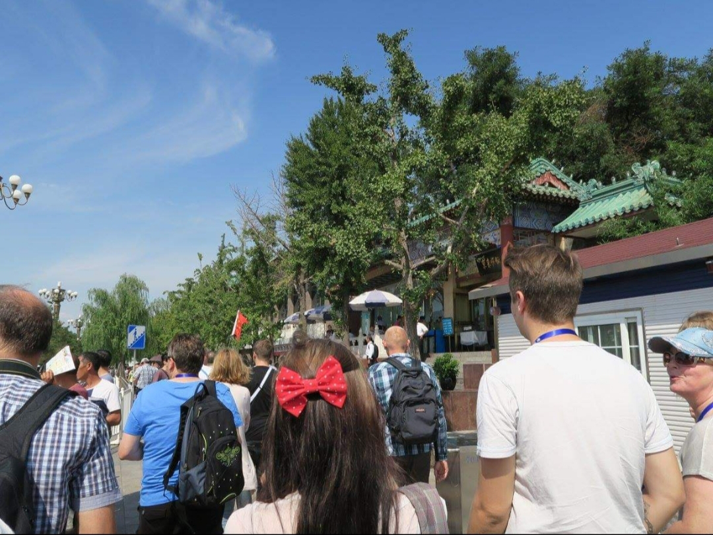
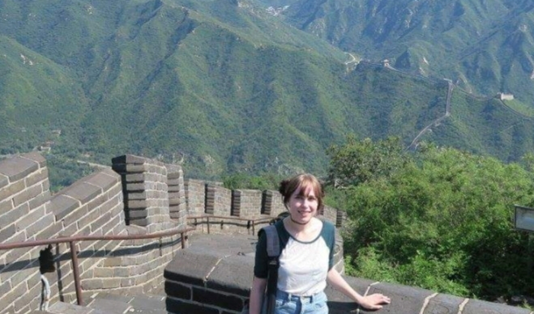

Name:
Nadine Klinkewitz.Alter:
23Wohnort:
Ich komme ursprünglich aus Dresden und wohne seit Herbst in Furtwangen, wo ich Medienkonzeption studiere.
Ich und meine Interessen:
In meiner Freizeit mache ich gerne Musik, lese, zeichne, träume vor mich hin oder gehe die Welt erkunden (v.a. in die Natur).
Außerdem habe ich ein großes Interesse für Mode und möchte gerne lernen selber zu nähen.
Auch Sprachen, Reisen (v.a. Ostasien,v.a.Japan), sowie Pädagogik und Psychologie interessieren mich sehr.
Ich hoffe durch den Studiengang ein praktischerer Mensch zu werden, der auch dazu in der Lage ist seine Ideen und Kreativität in die Realität umzusetzten.
 